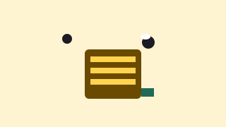
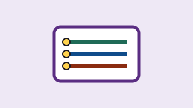

Protecting newborns from respiratory viruses
NeoVir group · Department of Public Health and Paediatric Sciences, University of Turin
In progress · 5 days left (ends )
€6,720 raised of €8,000 (84%) · 188 supporters
ideaBlume is the crowdfunding site for research projects at the University of Turin: choose a project, donate even a few euros and follow the results. The site is run by the University's ideaBlume Office. About us and how we work
NeoVir group · Department of Public Health and Paediatric Sciences, University of Turin
In progress · 5 days left (ends )
€6,720 raised of €8,000 (84%) · 188 supporters

ApiLab group · Department of Veterinary Sciences, University of Turin
Goal reached · you can still support it for 20 days (ends )
€7,800 raised of €6,000 (130%) · 142 supporters

EcoMente group · Department of Psychology, University of Turin
In progress · 26 days left (ends )
€4,575 raised of €7,500 (61%) · 131 supporters

Aria Aperta group · Department of Computer Science, University of Turin
In progress · 33 days left (ends )
€2,350 raised of €5,000 (47%) · 79 supporters

RapidAB group · Department of Molecular Biotechnology and Health Sciences, University of Turin
In progress · 40 days left (ends )
€1,620 raised of €9,000 (18%) · 41 supporters

UrbanBees group · Department of Life Sciences and Systems Biology, University of Turin
In progress · 45 days left (ends )
€2,170 raised of €7,000 (31%) · 64 supporters
Each project tells you who proposes it, what the money is for and how far it is from its goal.
From €5 upwards, with a reward or as a free donation. No need to register.
This applies to projects in the University programme. If the goal is not reached, we return your donation: this is the all-or-nothing rule.
Calculated from project data on 31 Oct 2026. 1722 supporters.
Rapid antibiotic test ·
Thank you to our first 41 supporters! Every week we will post a photo from the lab.
Healthy hives ·
Thank you! We passed €6,000. The University will match this amount when the campaign closes. Donations from now on go to the second goal: €9,000 for two more apiaries. These donations are not matched.
Newborns and viruses ·
We are €1,280 from the goal. Remember the all-or-nothing rule: if we do not reach it, donations are returned. If we do, the University adds €8,000.
Researchers at the University of Turin can apply to the University programme with a project. Associations, schools and local organisations can propose a partnership with a research group.